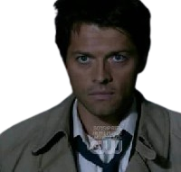
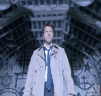
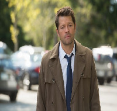

Um anjo interpretado pelo ator Misha Collins, que teve sua primeira aparição no primeiro episódio da quarta temporada.
Como é um anjo caído, para cumprir seu objetivo de prevenir que Lilith quebrasse os 66 selos que libertaria Lúcifer de sua gaiola no inferno, Castiel precisava de uma "casca", ou seja, um corpo para que pudesse se misturar aos humanos. Então, um devoto de Deus, chamado Jimmy, após ser convencido, o ajudou permitindo que possuísse seu corpo.
Desde sua chegada, Castiel ficou muito próximo dos irmãos Winchester e os ajudou em suas caçadas e a combater o mal que se alastrava.
  